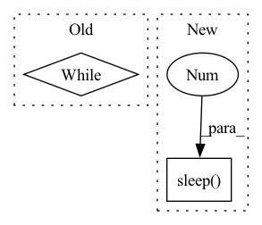

Pattern ID :9235
Before Change
for thread in self.transform_threads:
thread.start()
while self.pq.empty():
if not self.pq.empty():
break
for thread in self.push_threads:
thread.start()After Change
for thread in self.transform_threads:
thread.start()
break
time.sleep(1 )
while True:
if not self.pq.empty():
for thread in self.push_threads:In pattern: SUPERPATTERN
Frequency: 5
Non-data size: 2
Instances Fragment ID: 33317192
Project Name: relevanceai/relevanceai
Commit Name: bcd86f07e227544c61cfdd095da6975c5185159b
Time: 2022-09-19
Author: joseph.twin@relevance.ai
File Name: relevanceai/operations_new/ops_run.py
M Class Name: PullTransformPush
N Class Name: PullTransformPush
M Method Name: _start_worker_threads(1)
N Method Name: _start_worker_threads(1)
M Parent Class:
N Parent Class:
M File Name: relevanceai/operations_new/ops_run.py
N File Name: relevanceai/operations_new/ops_run.py
M Start Line: 559
M End Line: 568
N Start Line: 557
N End Line: 569
Before Change
)
time.sleep(0.3)
while True:
pass
if __name__ == "__main__":After Change
bin_id, posObj=[0.5, 0.5, 0.1], ornObj=[0, 0, 0, 1]
)
time.sleep(1 )
bin_aabb_min, bin_aabb_max = mercury.pybullet.get_aabb(bin_id)
bin_aabb_min += 0.01
bin_aabb_max -= 0.01 Fragment ID: 33317188
Project Name: wkentaro/safepicking
Commit Name: 1a11c14cdd6581a34e985e4d875032525109e855
Time: 2021-03-16
Author: www.kentaro.wada@gmail.com
File Name: examples/goal/bin_packing_no_act.py
M Class Name: AnonimousClass
N Class Name: AnonimousClass
M Method Name: main(0)
N Method Name: main(0)
M Parent Class:
N Parent Class:
M File Name: examples/goal/bin_packing_no_act.py
N File Name: examples/goal/bin_packing_no_act.py
M Start Line: 64
M End Line: 126
N Start Line: 70
N End Line: 123
Before Change
// Now loop and wait for a test to complete. The spin-wait here isn"t a big
// deal because the number of processes will be O(//GPUs) << O(//CPUs).
any_done = False
while not any_done:
for p in processes:
if not p.is_alive():
any_done = True
breakAfter Change
if not p.is_alive():
any_done = True
break
time.sleep(.1 ) // So we don"t hog CPU
// If we hit the timeout, then presume a test is hanged
if not any_done: Fragment ID: 33317191
Project Name: microsoft/deepspeed
Commit Name: 349f845b838c6992c5ea19e80fc728bef9645962
Time: 2023-02-10
Author: michaelwyatt@microsoft.com
File Name: tests/unit/common.py
M Class Name: DistributedExec
N Class Name: DistributedExec
M Method Name: _launch_procs(2)
N Method Name: _launch_procs(2)
M Parent Class: ABC
N Parent Class: ABC
M File Name: tests/unit/common.py
N File Name: tests/unit/common.py
M Start Line: 118
M End Line: 126
N Start Line: 113
N End Line: 137
Before Change
stderr=subprocess.PIPE,
bufsize=1,
)
while processes_alive([jinad_process, flow_process]):
time.sleep(15)
logger.info("rolling update done in process")
// add query testing
query_doc = Document()After Change
try:
logger.info("starting jinad...")
os.system("nohup jinad > jinad.log 2> jinaderr.log &")
time.sleep(2 )
logger.info("starting app.py...")
os.system(f"nohup {sys.executable} -u app.py -t flows > flow.log 2> flowerr.log &")
time.sleep(15)
logger.info("rolling update done in process") Fragment ID: 33317187
Project Name: jina-ai/examples
Commit Name: f5b1bcec4d3ae544568b6f108fdf48ee71a3b776
Time: 2021-05-17
Author: cristian.mitroi@jina.ai
File Name: wikipedia-sentences-query-while-indexing/tests/test_query_while_indexing.py
M Class Name: AnonimousClass
N Class Name: AnonimousClass
M Method Name: test_query_while_indexing(0)
N Method Name: test_query_while_indexing(0)
M Parent Class:
N Parent Class:
M File Name: wikipedia-sentences-query-while-indexing/tests/test_query_while_indexing.py
N File Name: wikipedia-sentences-query-while-indexing/tests/test_query_while_indexing.py
M Start Line: 46
M End Line: 73
N Start Line: 47
N End Line: 69